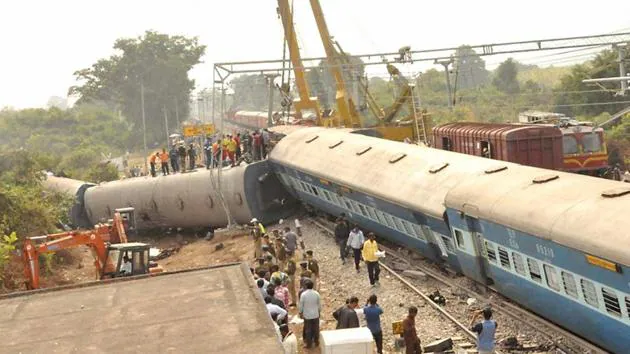

Collector S Nagalakshmi said, "Thirteen passengers have been killed in the gruesome accident that occurred at Kantakapalli railway station in Vizianagaram district.
As of now, the rescue teams have noticed that eight passengers are died and 50 are injured.The injured are shifted to Visakhapatnam and Vizianagaram district hospitals.Collector and SP M Deepika and Minister Botsa Satyanarayana and other officials reached the spot and are supervising the rescue operations."
The 08504 Visakhapatnam-Rayagada Passenger train collided with the 08532 Visakhapatnam-Palasa Passenger train. According to railway officials, the collision led to the derailment of two coaches of the Visakhapatnam-Rayagada train from the rear and the loco of the Visakhapatnam-Rayagada Passenger.
The rescue operations are underway with DRM/Waltair and his team are on the spot."Accident Relief Trains and other rescue equipments have been engaged and Helpline Numbers have been issued," it said.
"Bogies derailed after a train travelling along with passengers from Vizianagaram to Raigad hit a passenger train travelling on the same route Vishakapatnam to Palasa," East Central Railway CPRO said.
"Injuries reported but figures yet to be known.Two trains were involved in the accident. The rescue and restoration process is on," the railway official added.
As per the initial reports, the likely reason for the train collision is human error, specifically the overshooting of a signal by the Visakhapatnam-Rayagada passenger train.
Andhra Pradesh Chief Minister Jagan Mohan Reddy expressed deep shock over the Kantakapalli train accident incident in Vizianagaram district.
He ordered the officials to take quick-relief measures and ensure that the injured get prompt medical services.
The Chief Minister advised to send as many ambulances as possible from the nearby districts of Visakhapatnam and Anakapalli and make all kinds of arrangements to provide medical treatment in the nearby hospitals.
"The CM expressed deep shock over the Kantakapalli train accident incident in Vizianagaram district. He ordered the officials to take quick relief measures and ensure that the injured get prompt medical services," the CMO said in a post on X.
"The Chief Minister advised to send as many ambulances as possible from the nearby districts of Visakhapatnam and Anakapalli and make all kinds of arrangements to provide medical treatment in the nearby hospitals.
The details regarding the incident should be reported to him from time to time," it added.